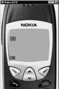
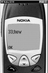
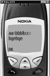

7
URL
Whenever we want to go to a
specific site on the World Wide Web, we require its address. This address is given
the nomenclature of URL, which stands for Uniform Resource Locator. The
uniformity in its syntax, contents and layout is very important, because the
WWW has millions of users who are geographically dispersed all over the world.
Without this uniformity in the pattern of the URL, there would be a lot of
confusion and ad-hocism in allocation of addresses to different sites. This
would in turn make it very difficult for users to locate a specific site on the
WWW.
Tim Barners Lee, who is the
creator of the HTML or more precisely, the World Wide Web, decided to have a
unique system of representing resources on the net. This unique system has the
following names :
URL - Uniform
Resource Locator
URI - Uniform
Resource Identifier
URN - Unified
Resource Name.
He decided on a single
format. He said that every resource would be identified with what is called a
scheme or a protocol. A colon and then, two slashes mark the end of the
protocol. The protocol is a scheme i.e. a way of interacting with a computer
that is connected on the other side of a network.
The WWW uses the HTTP or
the Hyper Text Transfer Protocol. For this reason, you will notice that most of
the URLs begin with http://. This is not the only protocol. There is another
protocol called File Transfer Protocol i.e. FTP. This is used for sites that
support ftp. The syntax of this scheme
will be ftp://.
In the example given below,
getScheme will return the protocol or the scheme i.e. http.
|
Screen 7. 1 |
aaa.wmls
extern function abc()
{
var aa;
aa=URL.getScheme("http://www.vijay.com:80/home/zz;33;how?aa=bbb&cc=byebye#pqr");
Dialogs.alert(aa);
}
You are also allowed to represent a URL by saying www.vijay.com . At that point, you wouldn't have given a scheme, so your browser takes the default scheme which is http. This is how the function will return http://www.vijay.com . The symbols :// are the delimiters. Following the http:// syntax, is the name of the computer. In our case, the name of my computer is www.vijay.com.
|
Screen 7. 2 |
aaa.wmls
extern function abc()
{
var aa;
aa=URL.getHost("http://www.vijay.com:80/home/zz;33;how?aa=bbb&cc=byebye#pqr");
Dialogs.alert(aa);
}
You can obtain the name of the
computer by using the function url.gethost. Url is a library. Once again, you
don't have to give an absolute URL. You can specify /home/zz, which means that
this is the path to be followed in the specified computer's directory.
Immediately following the
word vijay.com, we have :80. "Colon 80" represents the port number.
You wouldn't want one computer to support http or the World Wide Web protocol,
and another computer to support the File Transfer Protocol, since you normally
have them on the same computer. So, on every internet packet, there is a number
which specifies the protocol that it supports.
Every protocol is given a
number. IANA decided on the following allocation of numbers :
Protocol Number
HTTP 80
FTP 21
SMTP 25
(For sending mail)
POP3 110 (For receiving
mail).
These numbers are called
port numbers. The function URL.getPort can be used to obtain the port number.
|
 |
|
Screen 7. 3 |
aaa.wmls
extern function abc()
{
var aa;
aa=URL.getPort("http://www.vijay.com:80/home/zz;33;how?aa=bbb&cc=byebye#pqr");
Dialogs.alert(aa);
}
You connect to a server because
you want to extract a file from that server, and that file should reside somewhere on that server's hard disk.
The path that you give in the URI is not from the C or the D drive of that
computer, it's from a certain root directory or the home directory of the
server.
In the above example, we
have specified the subdirectory zz under the home directory. Since we haven't
stated any name, either index.html or default.html file is taken from there. To
find the absolute path, there is a function called URL.getPath.
|
Screen 7. 4 |
aaa.wmls
extern function abc()
{
var aa;
aa=URL.getPath("http://www.vijay.com:80/home/zz;33;how?aa=bbb&cc=byebye#pqr");
Dialogs.alert(aa);
}
After specifying the path, you can insert a semicolon. The text after the semicolon, upto the question mark is reserved for specifying the parameters. The function URL.getParameters will return the values ";33" and "how" . We would also like to pass parameters or data to the webserver.
|
 |
|
Screen 7. 5 |
aaa.wmls
extern function abc()
{
var aa;
aa=URL.getParameters("http://www.vijay.com:80/home/zz;33;how?aa=bbb&cc=byebye#pqr");
Dialogs.alert(aa);
}
For example, in a search
engine such as Yahoo, you enter the text "WAP". Then, when you click
on the Search button, the word "WAP" has to be sent to the Web
Server. At times, you may fill up a data entry form on a web site. This data
will also need to be sent to the Web Server. The transmission of information
from a client to a webserver is known as CGI or the Common GateWay Interface
programming. In this case, it is called "Query".
There is a function called
getQuery. It returns whatever text is available between the symbols ? and #.
This is what has to be passed on to the web server.
|
 |
|
Screen 7. 6 |
aaa.wmls
extern function abc()
{
var aa;
aa=URL.getQuery("http://www.vijay.com:80/home/zz;33;how?aa=bbb&cc=byebye#pqr");
Dialogs.alert(aa);
}
# is called a fragment anchor. After the # symbol, the name of a file has to be specified. In this example, we have used # to name a card in a deck.
|
Screen 7. 7 |
aaa.wmls
extern function abc()
{
var aa;
aa=URL.getFragment("http://www.vijay.com:80/home/zz;33;how?aa=bbb&cc=byebye#pqr");
Dialogs.alert(aa);
}
The function URL.getBase returns
the base of it all, i.e., it tells you as to where this file comes from.
|
Screen 7. 8 |
aaa.wmls
extern function abc()
{
var aa;
aa=URL.getBase();
Dialogs.alert(aa);
}
In our case, we now
know the sub directory from where the
WMLS file has been picked up. If it was
live from the internet, it would have returned
http:......
The next function in the
series is URL.getReferer.
|
Screen 7. 9 |
aaa.wmls
extern function abc()
{
var aa;
aa=URL.getReferer();
Dialogs.alert(aa);
}
|
Screen 7. 10 |
aaa.wmls
extern function abc()
{
var aa;
aa=URL.resolve("file://c:\\wmls","aaa.wml ");
Dialogs.alert(aa);
aa=URL.resolve("http://www.neca.com","aaa.wml ");
Dialogs.alert(aa);
}
An RFC is a Request For
Comments. This is a standard on the internet. There is an RFC which specifies certain characters in the
URL that have to be escaped. This means
that you can't directly use a character from a characterset. Instead, you have
to use the % sign, and then you put a number that represents the character in
that particular character set.
For example, SPACE has an
ASCII value of 32, or a Hex value of 20. Similarly, the character A has an
ASCII value 65. Every character has a specific number in the Character Set. The
characters that have to be escaped are the control characters from 0 - 1f and
7f and SPACE. This is mandatory. The characters which are reserved and can't be
used are as follows : semicolon, / , ?,
&.
Reserved ; / ?
: @ & = + $
If any of the above have to
be used, you have to specify the escape character. It is not wise to use the next slot. You have to use two
backslashes in the same way, as is the case with the double inverted commas,
where you always have to use two forward slashes //.
The delimiters are the
following. < > # % ". RFC
clearly indicates that the characters to be escaped are as follows :
Control characters 00 1f
and 7f . space
Reserved ; / ?
: @ & = + $
Unwise { } | \\ ^ [ ] `
Delims < > # % "
|
Screen 7. 11 |
aaa.wmls
extern function abc()
{
var aa;
aa=URL.escapeString(";\\|G ");
Dialogs.alert(aa);
}
G being a normal character
doesn't get escaped. To unescape, you need to escape the string. So, it will
give you the original value. ;\\|G gives the reverse of escape.
|
Screen 7. 12 |
aaa.wmls
extern function abc()
{
var aa;
aa=URL.unescapeString("%3B%5C%7cG");
Dialogs.alert(aa);
}
The function Isvalid has to be given a URL as input. If you pass a valid URL as a parameter, it returns TRUE. The name of the file is mandatory, and everything else is optional.
aaa.wmls
extern function abc()
{
var aa;
aa=URL.isValid("www.vijaymukhi.com");
if (aa)
Dialogs.alert("valid");
else
Dialogs.alert("invalid");
}